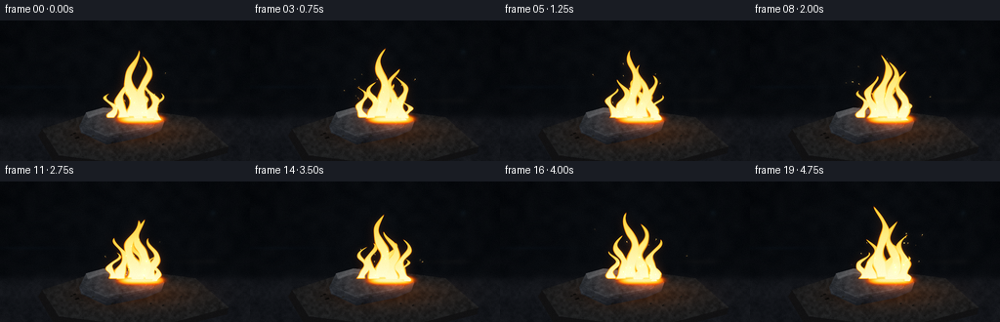
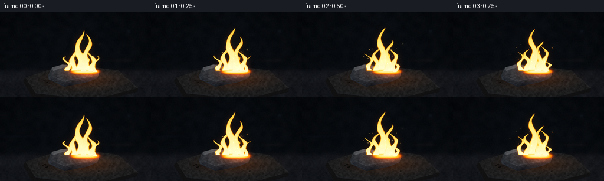
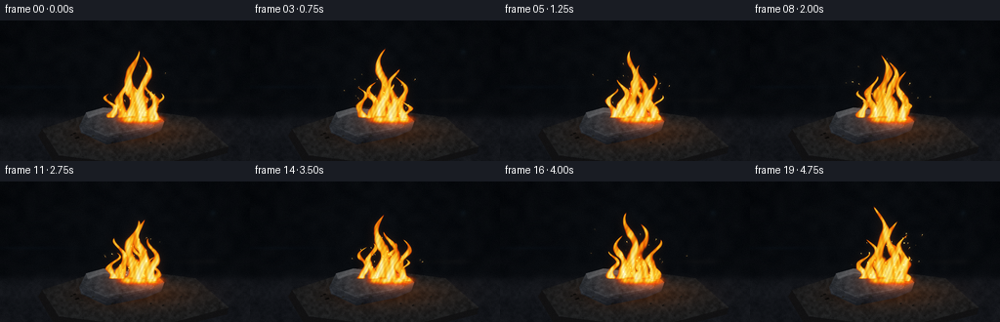
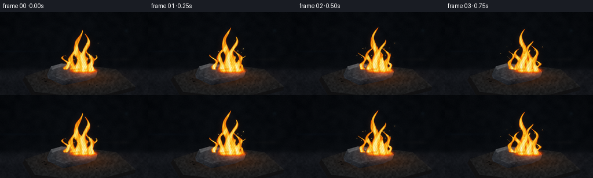
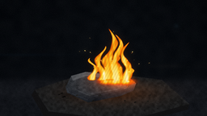

CODING AGENTS AS PIXEL WORLD MODELS
traex/GPT-6.1-Sol · material_0010
点击播放 · 原生 RGB 像素
逐轮保存的候选
回放视频、检查图与代码变化。
每份候选均可单独播放。实际图片检查记录在下方工具轨迹中。
候选 01播放与检查图
点击播放 · 原生 RGB 像素


展开代码变化
--- 上一保存版本
+++ 本次保存版本
@@ -0,0 +1,214 @@
+from pathlib import Path
+import json
+import numpy as np
+from PIL import Image, ImageDraw, ImageFilter
+import artifact_io
+
+ROOT=Path(__file__).resolve().parent
+SPEC=json.loads((ROOT/'task_spec.json').read_text())
+W,H=SPEC['width'],SPEC['height']
+S=3
+w,h=W*S,H*S
+Y,X=np.mgrid[0:h,0:w].astype(np.float32); X/=S; Y/=S
+rng=np.random.default_rng(19117)
+
+def noise(gw,gh,seed):
+ r=np.random.default_rng(seed)
+ a=r.uniform(0,1,(gh,gw)).astype(np.float32)
+ return np.asarray(Image.fromarray(a).resize((w,h),Image.Resampling.BICUBIC))
+N1=noise(95,55,45); N2=noise(240,136,34); N3=noise(29,17,21)
+
+def mask(poly):
+ im=Image.new('L',(w,h));d=ImageDraw.Draw(im)
+ d.polygon([(int(x*S),int(y*S)) for x,y in poly],fill=255)
+ return np.asarray(im).astype(float)/255
+
+def blur(a,r):
+ # Float planes preserve subtle gradients.
+ return np.asarray(Image.fromarray(np.float32(a)).filter(ImageFilter.GaussianBlur(r*S))) if False else np.asarray(Image.fromarray(np.uint8(np.clip(a,0,1)*255)).filter(ImageFilter.GaussianBlur(r*S))).astype(float)/255
+
+def overlay(a,col,alpha):
+ return a*(1-alpha[...,None])+col*alpha[...,None]
+
+# Dark, defocused workshop, textured fireproof slab in the foreground.
+base=np.zeros((h,w,3),np.float32)
+base[:]=[5.0,7.0,10.0]
+vign=np.clip(1-((X-131)/186)**2-((Y-80)/126)**2,0,1)
+base += vign[...,None]*np.array([4.,5.,6.])
+base+=(N3-.5)[...,None]*4
+floor=1/(1+np.exp(-(Y-99)*.42))
+texture=(.50*N1+.30*N2+.20*N3)
+base+=floor[...,None]*((7+11*texture)[...,None]*np.array([.93,.92,1.02]))
+# Out of focus ambient details.
+for cx,cy,rx,ry,col in [(29,68,44,1.8,[1,3,5]),(205,82,25,3,[5,4,3]),(218,32,3,3,[4,8,10])]:
+ base+=np.exp(-((X-cx)/rx)**2-((Y-cy)/ry)**2)[...,None]*col
+# Gray chamotte resting surface; subtle rough edges, not wood.
+slab_top=mask([(43,111),(114,88),(200,99),(234,129),(155,150),(60,138)])
+slab_side=mask([(43,111),(60,138),(155,150),(234,129),(232,136),(157,155),(55,145),(39,118)])
+base=overlay(base,np.broadcast_to([17.,17.,18.],base.shape),slab_side*.9)
+slabtex=25+17*N1+7*N2+3*N3
+slabcol=slabtex[...,None]*np.array([.72,.75,.78])
+base=overlay(base,slabcol,slab_top)
+# Fine pits in refractory.
+for i in range(650):
+ px=rng.uniform(43,230); py=rng.uniform(91,144); rr=rng.uniform(.08,.75)
+ pit=np.exp(-((X-px)/rr)**2-((Y-py)/(rr*.42))**2)*slab_top
+ base-=pit[...,None]*rng.uniform(3,13)
+# small cracks, subtle perspective.
+cracks=Image.new('L',(w,h)); d=ImageDraw.Draw(cracks)
+for coords in [[(70,125),(91,125),(99,128),(110,127),(120,130)],[(191,111),(186,115),(196,122),(201,128)],[(89,103),(96,107),(95,111)]]:
+ d.line([(int(a*S),int(b*S)) for a,b in coords],fill=100,width=1)
+base-=np.asarray(cracks)[...,None]/255*slab_top[...,None]*13
+shadow=np.exp(-((X-127)/40)**2-((Y-117)/6)**2)
+base*=1-shadow[...,None]*.82
+
+# Angular piece of scorched iron: a rough, bent, thick fragment.
+# All coordinates are fixed in space, with thermally varying illumination.
+faces=[
+ ([(81,108),(88,94),(106,89),(158,95),(168,103),(149,111),(110,119)],'top'),
+ ([(81,108),(110,119),(149,111),(168,103),(165,112),(149,119),(109,127),(83,115)],'front'),
+ ([(88,94),(106,89),(158,95),(147,98),(107,94),(90,100)],'edge'),
+ ([(148,97),(158,95),(168,103),(158,107),(148,103)],'end'),
+]
+face_masks={name:mask(poly) for poly,name in faces}
+body=np.maximum.reduce(list(face_masks.values()))
+# Fractured metal shading and grain; some fine anisotropic streaks.
+metal=(N1-.5)*18+(N2-.5)*10+(N3-.5)*9
+striae=np.sin(X*1.8+Y*3.9+N3*7)*np.sin(Y*1.3+X*.18)*1.8
+edge_lines=Image.new('L',(w,h));de=ImageDraw.Draw(edge_lines)
+for points in [[(87,108),(107,117),(148,110)],[(91,98),(105,93),(144,99)],[(83,110),(84,114),(109,124)],[(113,120),(148,112),(160,108)]]:
+ de.line([(int(a*S),int(b*S)) for a,b in points],fill=170,width=1)
+edgelight=np.asarray(edge_lines)/255
+# small steel shards on the surface.
+shards=[]
+for i in range(16):
+ px=rng.uniform(67,192);py=rng.uniform(115,133)
+ ww=rng.uniform(1,4)
+ shards.append((mask([(px,py),(px+ww,py-ww*.35),(px+ww*1.4,py+.4),(px+.5,py+1)]),rng.uniform(.2,.8)))
+# Static scar lines crossing upper steel, rough forging marks.
+scars=Image.new('L',(w,h));ds=ImageDraw.Draw(scars)
+for i in range(100):
+ px=rng.uniform(86,164);py=rng.uniform(91,119)
+ ds.line([(int(px*S),int(py*S)),(int((px+rng.uniform(1,6))*S),int((py+rng.uniform(-1,.5))*S))],fill=int(rng.uniform(15,95)),width=int(rng.choice([1,1,2])))
+scar=np.asarray(scars)/255*body
+
+# Smooth periodic noise carried upward makes continuous changing turbulent flame.
+rng=np.random.default_rng(622)
+wave_params=[(rng.uniform(.07,.36),rng.uniform(.05,.26),rng.uniform(.7,2.8),rng.uniform(0,6.28),1/(i+1)) for i in range(7)]
+def turbulence(t):
+ f=np.zeros_like(X)
+ for ax,ay,vel,ph,amp in wave_params:
+ f+=amp*np.sin(ax*X+ay*Y+vel*t+ph)*np.cos(ay*.6*X-ax*.7*Y+vel*t*.8+ph)
+ return f/1.7
+
+# Flame roots along the heated broken edge. Taller tongues are behind the steel.
+tongues=[(135,101,72,9.7,.8,0.3),(146,101,61,9.2,1.2,2.1),(156,102,48,7.5,.9,4.2),
+ (125,101,45,7.7,1.4,1.6),(115,100,31,5.8,1.3,4.8),(143,102,40,9.0,1.6,3.4),
+ (159,103,27,5.1,2.0,1.3)]
+# Ballistic sparks, naturally emitted continuously as iron oxidizes.
+sparks=[]
+for i in range(140):
+ born=rng.uniform(-1.2,5.0)
+ life=rng.uniform(.45,1.45)
+ sparks.append((born,life,rng.uniform(121,160),rng.uniform(96,102),rng.uniform(-33,33),rng.uniform(-69,-31),rng.uniform(.28,.74),rng.uniform(.65,1.3)))
+
+def make_frame(t):
+ flick=.90+.08*np.sin(7*t)+.06*np.sin(11*t+1.4)
+ out=base.copy()
+ # Reflected warm pool extends around the fragment, brightest at source.
+ refl=np.exp(-((X-143)/53)**2-((Y-114)/15)**2)*floor
+ out+=refl[...,None]*np.array([56.,23.,4.])*flick*(.75+.25*N1[...,None])
+ # Several irregular facets retain a cold steel identity away from the tip.
+ for poly,name in faces:
+ m=face_masks[name]
+ if name=='top':
+ shade=metal+striae+(X-95)*.12+(112-Y)*.4
+ col=np.array([44.,48.,53.])+shade[...,None]
+ elif name=='front':
+ shade=metal*.65+(124-Y)*1.2
+ col=np.array([24.,28.,34.])+shade[...,None]
+ elif name=='edge':
+ col=np.array([78.,82.,86.])+metal[...,None]*.75
+ else:
+ col=np.array([52.,45.,39.])+metal[...,None]
+ # Heat confined to jagged right side and the rear lip.
+ hot=np.exp(-((X-154)/19)**2-((Y-100)/7.2)**2)
+ warm=np.exp(-((X-147)/32)**2-((Y-102)/15)**2)
+ col+=warm[...,None]*[70*flick,17*flick,-4]
+ col+=hot[...,None]*[134*flick,49*flick,5]
+ out=overlay(out,np.clip(col,0,255),m)
+ out+=edgelight[...,None]*np.array([36,39,43])
+ out-=scar[...,None]*np.array([17,18,19])
+ for sm,heat in shards:
+ col=np.broadcast_to(np.array([48,45,40])*heat,out.shape)
+ out=overlay(out,col,sm)
+
+ turb=turbulence(t)
+ density=np.zeros_like(X)
+ # Asymmetric twisting, splitting tapered tongues rather than an oval blob.
+ for root,by,hei,wi,speed,phase in tongues:
+ hh=hei*(.95+.085*np.sin(t*speed*2.1+phase)+.045*np.sin(t*4.4+phase))
+ z=(by-Y)/hh
+ zc=np.clip(z,0,1)
+ center=root+np.sin(zc*7.8-t*2.7*speed+phase)*(1.7+zc*4.9)+zc**2*(3.3*np.sin(t*.9+phase))
+ width=wi*np.maximum(1-zc,.001)**.73*(.89+.18*np.sin(zc*18-t*6.0+phase))
+ dist=(X-center)/(width+.2)
+ p=(1-dist**2)+(turb*.23+np.sin(X*.44+Y*.20+t*3.7)*.08)*np.sin(zc*np.pi)
+ vertical=np.clip(z*18,0,1)*np.clip((1-z)*25,0,1)
+ tongue=np.clip(p*1.65,0,1)*vertical*(1-zc*.54)
+ density=np.maximum(density,tongue)
+ # The high-temperature roots wrap around the back rim.
+ rootglow=np.exp(-((X-144)/21)**4-((Y-101)/3.5)**2)*(.88+.08*np.sin(t*9))
+ density=np.maximum(density,rootglow)
+ # Do not let fire obscure the cool front plane.
+ density*=1-face_masks['front']*.97
+ # Fine moving dark folds break up the luminous sheet.
+ d=np.clip(density,0,1)
+ alpha=np.clip(d*4,0,1)
+ # Gold outside, creamy white inside; no red cartoon outline.
+ rr=np.interp(d,[0,.10,.25,.45,.67,1],[95,236,255,255,255,255])
+ gg=np.interp(d,[0,.10,.25,.45,.67,1],[15,59,135,199,234,251])
+ bb=np.interp(d,[0,.10,.25,.45,.67,1],[0,1,7,36,130,218])
+ fire=np.stack([rr,gg,bb],-1)
+ # Broad physically motivated optical bloom.
+ broad=blur(np.clip(d*.7,0,1),5.2)
+ small=blur(np.clip(d,0,1),1.35)
+ out+=broad[...,None]*[96,35,3]+small[...,None]*[39,22,6]
+ out=overlay(out,fire,alpha)
+ # Lower, luminous fissures along the fragment's heated edges.
+ fiss=Image.new('L',(w,h));df=ImageDraw.Draw(fiss)
+ for pp in [[(145,98),(153,100),(157,103),(163,104)],[(158,105),(157,108),(153,110)],[(146,102),(150,105),(149,107)]]:
+ df.line([(int(a*S),int(b*S)) for a,b in pp],fill=200,width=1)
+ ff=np.asarray(fiss)/255
+ out+=ff[...,None]*[140*flick,52*flick,9]
+ # Subtle airborne smoke, almost invisible in the dark behind flame.
+ sm=np.exp(-((X-(139+5*np.sin(Y*.10-t)))/17)**2)*np.exp(-((Y-28)/26)**2)*(0.3+0.7*N3)
+ out+=sm[...,None]*[1.5,2.0,2.6]
+ # Sparks have a small incandescent head and a thin fading exposure trail.
+ sparkim=Image.new('RGB',(w,h));sd=ImageDraw.Draw(sparkim)
+ for born,life,x0,y0,vx,vy,size,intensity in sparks:
+ age=t-born
+ if not 0<age<life:continue
+ xx=x0+vx*age; yy=y0+vy*age+15*age*age
+ if yy<2 or xx<2 or xx>254:continue
+ aa=np.clip(min(age*10,(life-age)*3),0,1)*intensity
+ tail=.026+size*.015
+ xprev=x0+vx*max(0,age-tail);yprev=y0+vy*max(0,age-tail)+15*max(0,age-tail)**2
+ sd.line([(int(xprev*S),int(yprev*S)),(int(xx*S),int(yy*S))],fill=(int(230*min(aa,1)),int(105*min(aa,1)),int(14*min(aa,1))),width=max(1,int(size*S*.6)))
+ r=size*S*.63
+ sd.ellipse((xx*S-r,yy*S-r,xx*S+r,yy*S+r),fill=(int(255*min(aa,1)),int(211*min(aa,1)),int(107*min(aa,1))))
+ sp=np.asarray(sparkim).astype(float)
+ bloom=np.asarray(sparkim.filter(ImageFilter.GaussianBlur(1.8*S))).astype(float)
+ out+=sp+bloom*.7
+ # Lens halation, natural film texture, highlight retention.
+ hi=np.clip((out.max(axis=2)-125)/140,0,1)
+ out+=blur(hi,2.3)[...,None]*[9,4,1]
+ out=np.clip(out,0,255)
+ out=Image.fromarray(out.astype(np.uint8)).resize((W,H),Image.Resampling.LANCZOS)
+ arr=np.asarray(out).astype(float)
+ grain=np.random.default_rng(300+int(t*4)).normal(0,.65,(H,W,1))
+ return np.uint8(np.clip(arr+grain,0,255))
+
+frames=np.stack([make_frame(i/SPEC['fps']) for i in range(SPEC['frames'])])
+artifact_io.save(frames,ROOT)
+print('Saved',frames.shape)
候选 02播放与检查图
点击播放 · 原生 RGB 像素


展开代码变化
--- 上一保存版本
+++ 本次保存版本
@@ -107,7 +107,7 @@
(159,103,27,5.1,2.0,1.3)]
# Ballistic sparks, naturally emitted continuously as iron oxidizes.
sparks=[]
-for i in range(140):
+for i in range(225):
born=rng.uniform(-1.2,5.0)
life=rng.uniform(.45,1.45)
sparks.append((born,life,rng.uniform(121,160),rng.uniform(96,102),rng.uniform(-33,33),rng.uniform(-69,-31),rng.uniform(.28,.74),rng.uniform(.65,1.3)))
@@ -153,9 +153,11 @@
center=root+np.sin(zc*7.8-t*2.7*speed+phase)*(1.7+zc*4.9)+zc**2*(3.3*np.sin(t*.9+phase))
width=wi*np.maximum(1-zc,.001)**.73*(.89+.18*np.sin(zc*18-t*6.0+phase))
dist=(X-center)/(width+.2)
- p=(1-dist**2)+(turb*.23+np.sin(X*.44+Y*.20+t*3.7)*.08)*np.sin(zc*np.pi)
+ fine=(np.sin(X*.93+Y*.47+t*8.1+np.sin(X*.18-Y*.21+t*3)*2.2)*.065+
+ np.sin(X*1.57-Y*.37+t*10.9)*.025)
+ p=(1-dist**2)+(turb*.38+np.sin(X*.44+Y*.20+t*3.7)*.15+fine)*np.sin(zc*np.pi)
vertical=np.clip(z*18,0,1)*np.clip((1-z)*25,0,1)
- tongue=np.clip(p*1.65,0,1)*vertical*(1-zc*.54)
+ tongue=np.clip(p*1.12,0,1)*vertical*(1-zc*.47)
density=np.maximum(density,tongue)
# The high-temperature roots wrap around the back rim.
rootglow=np.exp(-((X-144)/21)**4-((Y-101)/3.5)**2)*(.88+.08*np.sin(t*9))
@@ -163,13 +165,18 @@
# Do not let fire obscure the cool front plane.
density*=1-face_masks['front']*.97
# Fine moving dark folds break up the luminous sheet.
- d=np.clip(density,0,1)
- alpha=np.clip(d*4,0,1)
+ striations=(.72+.20*np.sin(X*.48+Y*.095+t*3.7+2.1*np.sin(Y*.11-t*3.2))
+ +.08*np.sin(X*1.13-Y*.16+t*7.6))
+ d=np.clip(density*striations,0,1)
+ alpha=np.clip(density*2.5,0,1)**1.12
+ alpha*=.85+.15*np.clip(d*2,0,1)
# Gold outside, creamy white inside; no red cartoon outline.
- rr=np.interp(d,[0,.10,.25,.45,.67,1],[95,236,255,255,255,255])
- gg=np.interp(d,[0,.10,.25,.45,.67,1],[15,59,135,199,234,251])
- bb=np.interp(d,[0,.10,.25,.45,.67,1],[0,1,7,36,130,218])
+ rr=np.interp(d,[0,.10,.25,.45,.67,1],[100,244,255,255,255,255])
+ gg=np.interp(d,[0,.10,.25,.45,.67,1],[13,53,112,183,225,250])
+ bb=np.interp(d,[0,.10,.25,.45,.67,1],[0,1,4,22,97,215])
fire=np.stack([rr,gg,bb],-1)
+ micro=.95+.05*np.sin(X*1.7+Y*.9+t*9.1+3*turb)
+ fire*=micro[...,None]
# Broad physically motivated optical bloom.
broad=blur(np.clip(d*.7,0,1),5.2)
small=blur(np.clip(d,0,1),1.35)
可观测工具轨迹
实际执行的命令与返回图片。
命令 1exit 0
/bin/bash -lc 'ls -la && cat prompt.txt && cat GENERATION_RULES.md && cat task_spec.json'
命令 2exit 0
/bin/bash -lc "cat artifact_io.py && python - <<'PY'
import numpy,PIL
print('numpy',numpy.__version__)
PY"命令 3exit 0
/bin/bash -lc "mkdir -p .tmp && cat > generate.py <<'PY'
from pathlib import Path
import json
import numpy as np
from PIL import Image, ImageDraw, ImageFilter
import artifact_io
ROOT=Path(__file__).resolve().parent
SPEC=json.loads((ROOT/'task_spec.json').read_text())
W,H=SPEC['width'],SPEC['height']
S=3
w,h=W*S,H*S
Y,X=np.mgrid[0:h,0:w].astype(np.float32); X/=S; Y/=S
rng=np.random.default_rng(19117)
def noise(gw,gh,seed):
r=np.random.default_rng(seed)
a=r.uniform(0,1,(gh,gw)).astype(np.float32)
return np.asarray(Image.fromarray(a).resize((w,h),Image.Resampling.BICUBIC))
N1=noise(95,55,45); N2=noise(240,136,34); N3=noise(29,17,21)
def mask(poly):
im=Image.new('L',(w,h));d=ImageDraw.Draw(im)
d.polygon([(int(x*S),int(y*S)) for x,y in poly],fill=255)
return np.asarray(im).astype(float)/255
def blur(a,r):
# Float planes preserve subtle gradients.
return np.asarray(Image.fromarray(np.float32(a)).filter(ImageFilter.GaussianBlur(r*S))) if False else np.asarray(Image.fromarray(np.uint8(np.clip(a,0,1)*255)).filter(ImageFilter.GaussianBlur(r*S))).astype(float)/255
def overlay(a,col,alpha):
return a*(1-alpha[...,None])+col*alpha[...,None]
# Dark, defocused workshop, textured fireproof slab in the foreground.
base=np.zeros((h,w,3),np.float32)
base[:]=[5.0,7.0,10.0]
vign=np.clip(1-((X-131)/186)**2-((Y-80)/126)**2,0,1)
base += vign[...,None]*np.array([4.,5.,6.])
base+=(N3-.5)[...,None]*4
floor=1/(1+np.exp(-(Y-99)*.42))
texture=(.50*N1+.30*N2+.20*N3)
base+=floor[...,None]*((7+11*texture)[...,None]*np.array([.93,.92,1.02]))
# Out of focus ambient details.
for cx,cy,rx,ry,col in [(29,68,44,1.8,[1,3,5]),(205,82,25,3,[5,4,3]),(218,32,3,3,[4,8,10])]:
base+=np.exp(-((X-cx)/rx)**2-((Y-cy)/ry)**2)[...,None]*col
# Gray chamotte resting surface; subtle rough edges, not wood.
slab_top=mask([(43,111),(114,88),(200,99),(234,129),(155,150),(60,138)])
slab_side=mask([(43,111),(60,138),(155,150),(234,129),(232,136),(157,155),(55,145),(39,118)])
base=overlay(base,np.broadcast_to([17.,17.,18.],base.shape),slab_side*.9)
slabtex=25+17*N1+7*N2+3*N3
slabcol=slabtex[...,None]*np.array([.72,.75,.78])
base=overlay(base,slabcol,slab_top)
# Fine pits in refractory.
for i in range(650):
px=rng.uniform(43,230); py=rng.uniform(91,144); rr=rng.uniform(.08,.75)
pit=np.exp(-((X-px)/rr)**2-((Y-py)/(rr*.42))**2)*slab_top
base-=pit[...,None]*rng.uniform(3,13)
# small cracks, subtle perspective.
cracks=Image.new('L',(w,h)); d=ImageDraw.Draw(cracks)
for coords in [[(70,125),(91,125),(99,128),(110,127),(120,130)],[(191,111),(186,115),(196,122),(201,128)],[(89,103),(96,107),(95,111)]]:
d.line([(int(a*S),int(b*S)) for a,b in coords],fill=100,width=1)
base-=np.asarray(cracks)[...,None]/255*slab_top[...,None]*13
shadow=np.exp(-((X-127)/40)**2-((Y-117)/6)**2)
base*=1-shadow[...,None]*.82
# Angular piece of scorched iron: a rough, bent, thick fragment.
# All coordinates are fixed in space, with thermally varying illumination.
faces=[
([(81,108),(88,94),(106,89),(158,95),(168,103),(149,111),(110,119)],'top'),
([(81,108),(110,119),(149,111),(168,103),(165,112),(149,119),(109,127),(83,115)],'front'),
([(88,94),(106,89),(158,95),(147,98),(107,94),(90,100)],'edge'),
([(148,97),(158,95),(168,103),(158,107),(148,103)],'end'),
]
face_masks={name:mask(poly) for poly,name in faces}
body=np.maximum.reduce(list(face_masks.values()))
# Fractured metal shading and grain; some fine anisotropic streaks.
metal=(N1-.5)*18+(N2-.5)*10+(N3-.5)*9
striae=np.sin(X*1.8+Y*3.9+N3*7)*np.sin(Y*1.3+X*.18)*1.8
edge_lines=Image.new('L',(w,h));de=ImageDraw.Draw(edge_lines)
for points in [[(87,108),(107,117),(148,110)],[(91,98),(105,93),(144,99)],[(83,110),(84,114),(109,124)],[(113,120),(148,112),(160,108)]]:
de.line([(int(a*S),int(b*S)) for a,b in points],fill=170,width=1)
edgelight=np.asarray(edge_lines)/255
# small steel shards on the surface.
shards=[]
for i in range(16):
px=rng.uniform(67,192);py=rng.uniform(115,133)
ww=rng.uniform(1,4)
shards.append((mask([(px,py),(px+ww,py-ww*.35),(px+ww*1.4,py+.4),(px+.5,py+1)]),rng.uniform(.2,.8)))
# Static scar lines crossing upper steel, rough forging marks.
scars=Image.new('L',(w,h));ds=ImageDraw.Draw(scars)
for i in range(100):
px=rng.uniform(86,164);py=rng.uniform(91,119)
ds.line([(int(px*S),int(py*S)),(int((px+rng.uniform(1,6))*S),int((py+rng.uniform(-1,.5))*S))],fill=int(rng.uniform(15,95)),width=int(rng.choice([1,1,2])))
scar=np.asarray(scars)/255*body
# Smooth periodic noise carried upward makes continuous changing turbulent flame.
rng=np.random.default_rng(622)
wave_params=[(rng.uniform(.07,.36),rng.uniform(.05,.26),rng.uniform(.7,2.8),rng.uniform(0,6.28),1/(i+1)) for i in range(7)]
def turbulence(t):
f=np.zeros_like(X)
for ax,ay,vel,ph,amp in wave_params:
f+=amp*np.sin(ax*X+ay*Y+vel*t+ph)*np.cos(ay*.6*X-ax*.7*Y+vel*t*.8+ph)
return f/1.7
# Flame roots along the heated broken edge. Taller tongues are behind the steel.
tongues=[(135,101,72,9.7,.8,0.3),(146,101,61,9.2,1.2,2.1),(156,102,48,7.5,.9,4.2),
(125,101,45,7.7,1.4,1.6),(115,100,31,5.8,1.3,4.8),(143,102,40,9.0,1.6,3.4),
(159,103,27,5.1,2.0,1.3)]
# Ballistic sparks, naturally emitted continuously as iron oxidizes.
sparks=[]
for i in range(140):
born=rng.uniform(-1.2,5.0)
life=rng.uniform(.45,1.45)
sparks.append((born,life,rng.uniform(121,160),rng.uniform(96,102),rng.uniform(-33,33),rng.uniform(-69,-31),rng.uniform(.28,.74),rng.uniform(.65,1.3)))
def make_frame(t):
flick=.90+.08*np.sin(7*t)+.06*np.sin(11*t+1.4)
out=base.copy()
# Reflected warm pool extends around the fragment, brightest at source.
refl=np.exp(-((X-143)/53)**2-((Y-114)/15)**2)*floor
out+=refl[...,None]*np.array([56.,23.,4.])*flick*(.75+.25*N1[...,None])
# Several irregular facets retain a cold steel identity away from the tip.
for poly,name in faces:
m=face_masks[name]
if name=='top':
shade=metal+striae+(X-95)*.12+(112-Y)*.4
col=np.array([44.,48.,53.])+shade[...,None]
elif name=='front':
shade=metal*.65+(124-Y)*1.2
col=np.array([24.,28.,34.])+shade[...,None]
elif name=='edge':
col=np.array([78.,82.,86.])+metal[...,None]*.75
else:
col=np.array([52.,45.,39.])+metal[...,None]
# Heat confined to jagged right side and the rear lip.
hot=np.exp(-((X-154)/19)**2-((Y-100)/7.2)**2)
warm=np.exp(-((X-147)/32)**2-((Y-102)/15)**2)
col+=warm[...,None]*[70*flick,17*flick,-4]
col+=hot[...,None]*[134*flick,49*flick,5]
out=overlay(out,np.clip(col,0,255),m)
out+=edgelight[...,None]*np.array([36,39,43])
out-=scar[...,None]*np.array([17,18,19])
for sm,heat in shards:
col=np.broadcast_to(np.array([48,45,40])*heat,out.shape)
out=overlay(out,col,sm)
turb=turbulence(t)
density=np.zeros_like(X)
# Asymmetric twisting, splitting tapered tongues rather than an oval blob.
for root,by,hei,wi,speed,phase in tongues:
hh=hei*(.95+.085*np.sin(t*speed*2.1+phase)+.045*np.sin(t*4.4+phase))
z=(by-Y)/hh
zc=np.clip(z,0,1)
center=root+np.sin(zc*7.8-t*2.7*speed+phase)*(1.7+zc*4.9)+zc**2*(3.3*np.sin(t*.9+phase))
width=wi*np.maximum(1-zc,.001)**.73*(.89+.18*np.sin(zc*18-t*6.0+phase))
dist=(X-center)/(width+.2)
p=(1-dist**2)+(turb*.23+np.sin(X*.44+Y*.20+t*3.7)*.08)*np.sin(zc*np.pi)
vertical=np.clip(z*18,0,1)*np.clip((1-z)*25,0,1)
tongue=np.clip(p*1.65,0,1)*vertical*(1-zc*.54)
density=np.maximum(density,tongue)
# The high-temperature roots wrap around the back rim.
rootglow=np.exp(-((X-144)/21)**4-((Y-101)/3.5)**2)*(.88+.08*np.sin(t*9))
density=np.maximum(density,rootglow)
# Do not let fire obscure the cool front plane.
density*=1-face_masks['front']*.97
# Fine moving dark folds break up the luminous sheet.
d=np.clip(density,0,1)
alpha=np.clip(d*4,0,1)
# Gold outside, creamy white inside; no red cartoon outline.
rr=np.interp(d,[0,.10,.25,.45,.67,1],[95,236,255,255,255,255])
gg=np.interp(d,[0,.10,.25,.45,.67,1],[15,59,135,199,234,251])
bb=np.interp(d,[0,.10,.25,.45,.67,1],[0,1,7,36,130,218])
fire=np.stack([rr,gg,bb],-1)
# Broad physically motivated optical bloom.
broad=blur(np.clip(d*.7,0,1),5.2)
small=blur(np.clip(d,0,1),1.35)
out+=broad[...,None]*[96,35,3]+small[...,None]*[39,22,6]
out=overlay(out,fire,alpha)
# Lower, luminous fissures along the fragment's heated edges.
fiss=Image.new('L',(w,h));df=ImageDraw.Draw(fiss)
for pp in [[(145,98),(153,100),(157,103),(163,104)],[(158,105),(157,108),(153,110)],[(146,102),(150,105),(149,107)]]:
df.line([(int(a*S),int(b*S)) for a,b in pp],fill=200,width=1)
ff=np.asarray(fiss)/255
out+=ff[...,None]*[140*flick,52*flick,9]
# Subtle airborne smoke, almost invisible in the dark behind flame.
sm=np.exp(-((X-(139+5*np.sin(Y*.10-t)))/17)**2)*np.exp(-((Y-28)/26)**2)*(0.3+0.7*N3)
out+=sm[...,None]*[1.5,2.0,2.6]
# Sparks have a small incandescent head and a thin fading exposure trail.
sparkim=Image.new('RGB',(w,h));sd=ImageDraw.Draw(sparkim)
for born,life,x0,y0,vx,vy,size,intensity in sparks:
age=t-born
if not 0<age<life:continue
xx=x0+vx*age; yy=y0+vy*age+15*age*age
if yy<2 or xx<2 or xx>254:continue
aa=np.clip(min(age*10,(life-age)*3),0,1)*intensity
tail=.026+size*.015
xprev=x0+vx*max(0,age-tail);yprev=y0+vy*max(0,age-tail)+15*max(0,age-tail)**2
sd.line([(int(xprev*S),int(yprev*S)),(int(xx*S),int(yy*S))],fill=(int(230*min(aa,1)),int(105*min(aa,1)),int(14*min(aa,1))),width=max(1,int(size*S*.6)))
r=size*S*.63
sd.ellipse((xx*S-r,yy*S-r,xx*S+r,yy*S+r),fill=(int(255*min(aa,1)),int(211*min(aa,1)),int(107*min(aa,1))))
sp=np.asarray(sparkim).astype(float)
bloom=np.asarray(sparkim.filter(ImageFilter.GaussianBlur(1.8*S))).astype(float)
out+=sp+bloom*.7
# Lens halation, natural film texture, highlight retention.
hi=np.clip((out.max(axis=2)-125)/140,0,1)
out+=blur(hi,2.3)[...,None]*[9,4,1]
out=np.clip(out,0,255)
out=Image.fromarray(out.astype(np.uint8)).resize((W,H),Image.Resampling.LANCZOS)
arr=np.asarray(out).astype(float)
grain=np.random.default_rng(300+int(t*4)).normal(0,.65,(H,W,1))
return np.uint8(np.clip(arr+grain,0,255))
frames=np.stack([make_frame(i/SPEC['fps']) for i in range(SPEC['frames'])])
artifact_io.save(frames,ROOT)
print('Saved',frames.shape)
PY
python generate.py"命令 4exit 0
/bin/bash -lc "python - <<'PY'
p='generate.py'
s=open(p).read().replace('for i in range(140):','for i in range(225):')
s=s.replace('p=(1-dist**2)+(turb*.23+np.sin(X*.44+Y*.20+t*3.7)*.08)*np.sin(zc*np.pi)', '''fine=(np.sin(X*.93+Y*.47+t*8.1+np.sin(X*.18-Y*.21+t*3)*2.2)*.065+
np.sin(X*1.57-Y*.37+t*10.9)*.025)
p=(1-dist**2)+(turb*.38+np.sin(X*.44+Y*.20+t*3.7)*.15+fine)*np.sin(zc*np.pi)''')
s=s.replace('tongue=np.clip(p*1.65,0,1)*vertical*(1-zc*.54)', 'tongue=np.clip(p*1.12,0,1)*vertical*(1-zc*.47)')
s=s.replace('d=np.clip(density,0,1)\\n alpha=np.clip(d*4,0,1)', '''striations=(.72+.20*np.sin(X*.48+Y*.095+t*3.7+2.1*np.sin(Y*.11-t*3.2))
+.08*np.sin(X*1.13-Y*.16+t*7.6))
d=np.clip(density*striations,0,1)
alpha=np.clip(density*2.5,0,1)**1.12
alpha*=.85+.15*np.clip(d*2,0,1)''')
s=s.replace('[95,236,255,255,255,255]', '[100,244,255,255,255,255]').replace('[15,59,135,199,234,251]', '[13,53,112,183,225,250]').replace('[0,1,7,36,130,218]', '[0,1,4,22,97,215]')
# Add fine emission structure after the color map.
s=s.replace('fire=np.stack([rr,gg,bb],-1)', '''fire=np.stack([rr,gg,bb],-1)
micro=.95+.05*np.sin(X*1.7+Y*.9+t*9.1+3*turb)
fire*=micro[...,None]''')
open(p,'w').write(s)
PY
python generate.py"命令 5exit 0
/bin/bash -lc 'command -v ffmpeg || true'
视觉工具实际返回图片 1

视觉工具实际返回图片 2

保存候选 2 份；完成命令 5 次；可验证图片返回 2 张。原始 API 响应与完整日志保留在本地。